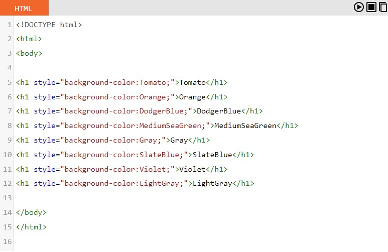
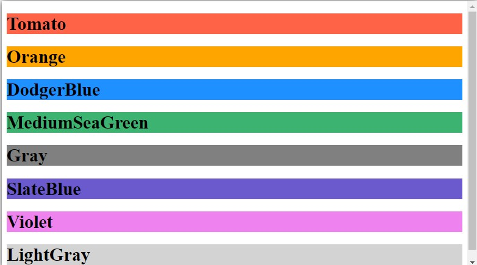
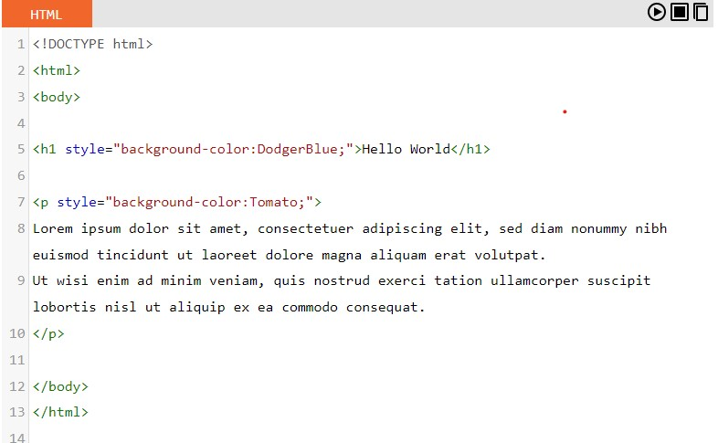
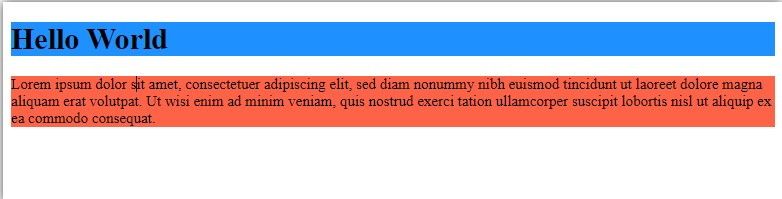
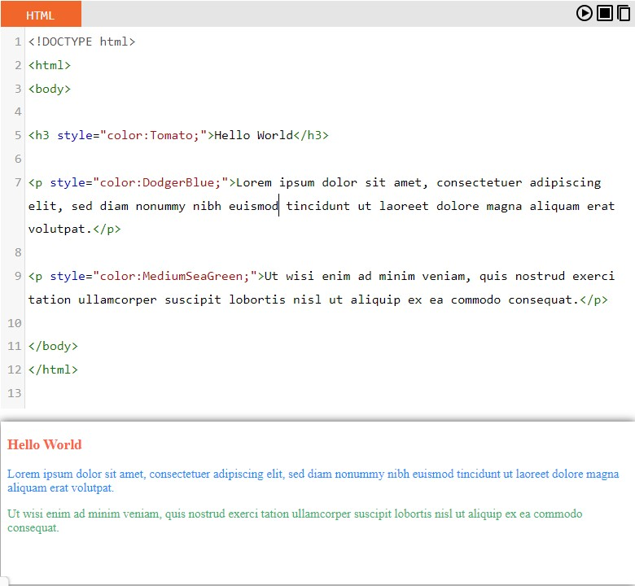
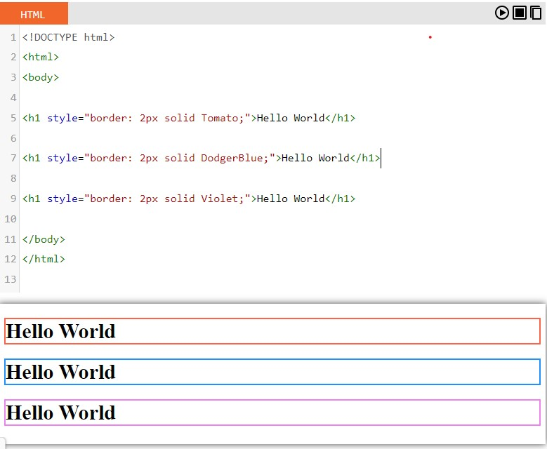
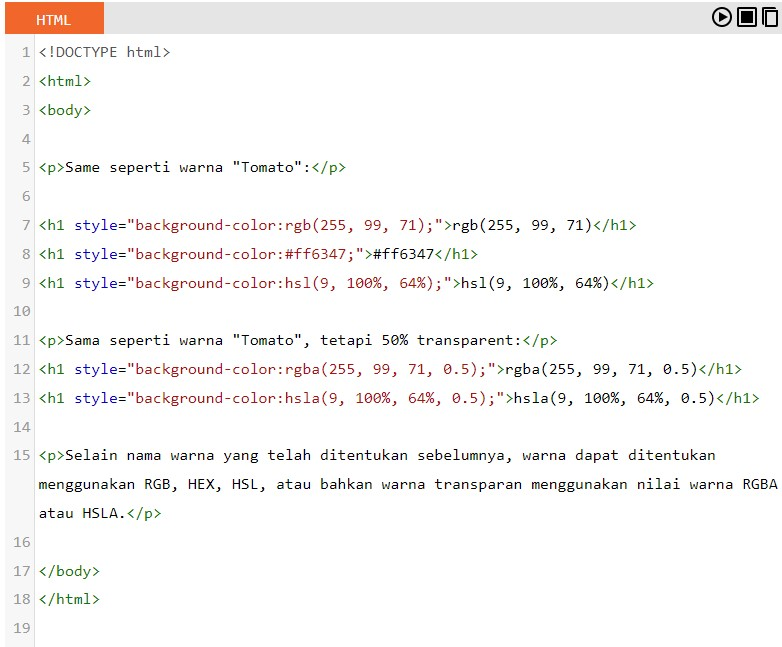
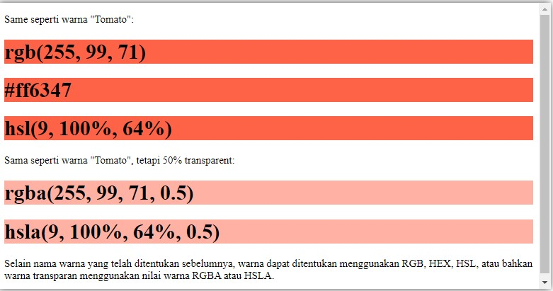

Dalam Html warna atau color dapat di definisikan dengan warna yang telah ditentukan sebelumya, atau dengan nilai RGB, HEX, HSL, RGBA, atau HSLA.
Dalam HTML, warna dapat ditentukan dengan menggunakan nama warna.
Contoh:
 Pada HTML kita dapat mengatur backgorund color (warna latar belakang) untuk elemen HTML.
Contoh:
 Dalam HTML kita dapat mengatur warna teks sesuai dengan keinginan kita.
Contoh:
Kita juga dapat menentukan warna border pada HTML.
Contoh:
Dalam HTML, warna juga dapat ditentukan menggunakan nilai RGB, nilai HEX, nilai HSL, nilai RGBA, dan nilai HSLA. Tiga elemen < dif > berikut memiliki warna background yang diatur dengan nilai RGB, HEX, dan HSL.
Contoh:
 